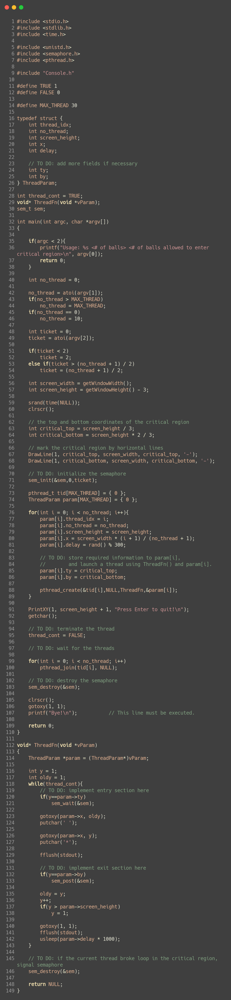

<!doctype html>
<html>
    <head>
        <meta charset="UTF-8">
        <meta name = "viewport" content = "width = device-width, initial-scale=1.0">
        <title>코드 리뷰</title>
        <link rel="stylesheet" type="text/css" href="../../css/pages.css">
    </head>
</html>

<body>
    <header>
        <h3><a href = "../../index.html">HAGUS <br> HARDWARE</a></h3> 
        <ul id="main_menu">
        </ul>

        <script src = "../../MainMenu.js"></script>
    </header>

    <section class="section">
    <div id = "tag_menu">
    </div>

    <script src = "../../TIL_tag_menu.js"></script>

    <div id = "tag_list">
        <div class="l_title"><a href = "../../TIL.html">Study. </a></div><hr>
        <div class = "l_subtitle"><div class = "title"><a href = "../../TIL.html"><strong>Code Review_01_q1 </div><div id="date">2021.6.11</div></strong></a></div>
             <!--content-->
        <div class = "content">
<br>
<pre>
!! 기말 고사 끝나면 지울 것 !!
세마포어를 이용하여 Critical Section 공 넣기 구현

<strong>!! POSIX Semaphore functions !!</strong>

<strong>int sem_init(sem_t *sem, int pshared, unsigned value);</strong>
<i style="font-size: x-small;"> 파라미터 : 초기화해야할 세마포어, 프로세스간의 공유여부를 설정(보통 0), 초기화된 세마포어에 할당하는 값</i>

<strong>int sem_wait(sem_t *sem)</strong>
<i style="font-size: x-small;"> 파라미터 : 잠궈야 할 세마포어</i>

<strong>int sem_post(sem_t *sem)</strong>
<i style="font-size: x-small;"> 파라미터 : 잠금을 해제 할 세마포어</i>

<strong>int sem_getvalue(sem_t * restrict sem, int * restrict sval)</strong>
<i style="font-size: x-small;"> 파라미터 : 값을 가져올 세마포어, 함수 수행결과인 세마포어 값을 저장하는 메모리 위치</i>
sem_destroy()

<strong>int sem_destroy(sem_t * sem)</strong>
<i style="font-size: x-small;"> 파라미터 : 파기해야 할 이름이 명명되지 않은 세마포어</i>

</pre>>


    


        <br>
        <br>
        

        </div>

    </div>

</section>

    
</body>


